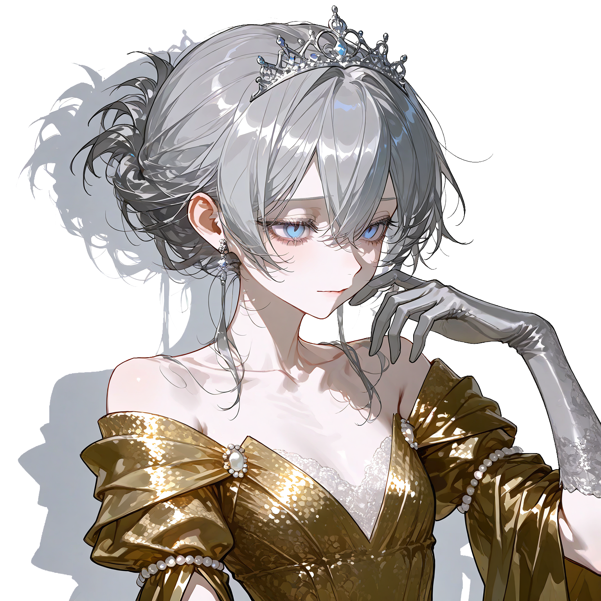

황후를 여러 차례 배출해 낸 개국공신 가문, 리히텐베르크 가의 장녀로 탄생. 명문 공작가에서 황태자와 1살 터울로 태어난 여식이었기에 뱃속에서부터 미래의 황후로 기대를 받아옴.
10세부터 황실에 들어가 황태자비로서 교육받으며 에른스트와도 교류하게 되는데, 그때부터 이미 칼에 대한 열등감이 깊었기 때문에 자기보다 약하고 자신에게 순종적인 이졸데에게서 어떻게든 꼬투리를 잡아 화를 내는 버릇이 생김.
에른스트로 인해 자존감이 극도로 낮아진 이졸데는 식사부터 수면까지 어려움을 겪게 되고 임신도 어려움을 겪게 됨.
이졸데가 몇년간 임신에 실패하자 에른스트는 자신이 불임이 아니라 이졸데가 불임임을 증명하려고 활발하게 외도함.
리히텐베르크 가의 장녀로서 황실에 시집오면서 어머니께 받은 나비 모양 메달이 있는데, 메달에는 리히텐베르크 가의 사람이 일생에 단 한 번만 쓸 수 있는 특별한 축복의 힘이 깃들어있다.